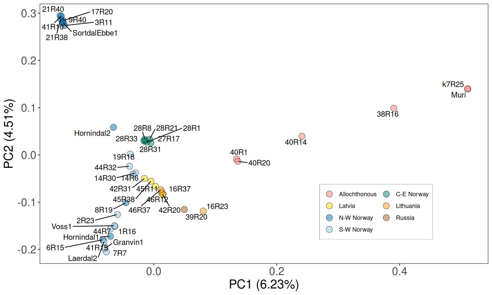

5 Phylogeny and Population Structure
5.1 On this page
Biological insights and take-home messages are at the bottom of the page at section Lesson Learnt: sec-lesson-learnt-feature-selection.
- Here
5.2 Phylogeny
5.2.1 Identify quasi single-copy genes
Uniform header sequences, since they come from multiple sources and they are all messed up and inconsistent.
We will create a set of non-redundant S. cerevisiae proteins, by clustering them based on a 70% sequence similarity groups.
We now check protein clusters having only a single copy gene per yeast strain.
# filter clusters into small one gene ortholog clusters
python3.5 Vikings.filterCDHITclusters.py --clstr all_plusKV.aa.0.7.fa.clstr
# clean folder
mkdir -p 01_filter_clusters/01_clusters_311-350
mkdir -p 01_filter_clusters/02_clusters_311-350_noDuplicates
mv all_plusKV.aa.0.7.fa.clstr.fltr.clstr.* 01_filter_clusters
# remove duplicated genes from orthologs clusters
python3.5 Vikings.filterCDHITclustersDeduplicates.py \
--indir 01_filter_clusters/01_clusters_311-350 \
--outdir 01_filter_clusters/02_clusters_311-350_noDuplicate
# retrieve amino acid sequences
mkdir -p 01_filter_clusters/03_clusters_aa
# format headers
sed -i 's/ .*//g' ../all_plusKV.aa.fa
sed -i 's/|.*//g' ../all_plusKV.aa.fa &
for file in 02_clusters_311-350_noDuplicates/*; do sed -i 's/|.*//g' $file ; done
python3.5 Vikings.CDHITclustersList2ntSeq.py \
--fasta all_plusKV.aa.fa \
--indir ./01_filter_clusters/02_clusters_311-350_noDuplicates/ \
--outdir ./01_filter_clusters/03_clusters_aa/5.2.2 Create animo acid and codon alignments
Prepare nucleotidic sequences
mkdir 02_nt_start/
# reformat the header to match aa
for file in *.fa; do
STRAIN=$(basename $file | tr '.' ' ' | cut -f 1 -d " ");
sed -i 's/ .*//g' $file;
sed -i 's/|.*//g' $file;
sed -i 's/>/>_/g' $file;
sed -i "s/>/>$STRAIN/g" $file;
done
# select nt per cluster
cat *.fa > ../all_plusKV.nt.fa
# correct worng headers
sed -i 's/Skudr_Skudr/Skudr/g' all_plusKV.nt.fa;
sed -i 's/Suvar_Suvar/Suvar/g' all_plusKV.nt.fa;
sed -i 's/Seuba_Seuba/Seuba/g' all_plusKV.nt.fa
mkdir 03_nt_clusters
# cluster NT
cd-hit -T 72 -c 0.98 -aL 0.95 -d 0 -i all_plusKV.nt.fa -o all_plusKV.nt.098.fa
# extract cluster gene lists
python3.5 Vikings.filterCDHITclusters.nt.py --clstr all_plusKV.nt.098.fa.clstr
# select genes
cat gene.lst \
| xargs -n 1 -P 64 -I {} sh -c \
'echo {}; \
for file in 00_nt_clusters_lst/*.clstr.*; do
if grep -q {} $file;
then cp $file 00_nt_clusters_lst_select;
fi; done'
# add Hittinger IDs
for file in 99_Hittinger/coding/*.fsa; do
grep ">" $file \
| sed 's/>//g' \
> 99_Hittinger/geneList/$(basename $file .fsa).lst;
done
python3.5 Vikings.addHittingerID.py \
--CDlists 01_nt_clusters_lst_select \
--Hit 99_Hittinger/geneList/ \
--outdir 02_nt_clusters_lst_select_Hittinger
cat all_plusKV.aa.fa 99_Hittinger/coding/*.aa.mfa > all_plusKV.Hit.aa.fa
cat all_plusKV.nt.fa 99_Hittinger/coding/*.fsa > all_plusKV.Hit.nt.fa
for file in 02_nt_clusters_lst_select_Hittinger/*.Hit; do sed -i 's/ .*//g' $file ; done
# select aa for each cluster
python3.5 Vikings.CDHITclustersList2ntSeq.py \
--fasta all_plusKV.Hit.aa.fa \
--indir ./02_nt_clusters_lst_select_Hittinger \
--outdir ./03_aa_clusters/
# align aa clusters
ls ./03_aa_clusters/ \
| xargs -n 8 -P 8 -I {} sh -c \
'mafft --localpair --maxiterate 1000 --ep 0.123 --thread 8 ./03_aa_clusters/{} > ./04_aa_clusters_aln/{}.aln.fa'
for file in ./04_aa_clusters_aln/*.fa; do
perl ~/rubbish/00_Brigida_starting_files/pal2nal.v14/pal2nal.pl \
$file 05_nt_clusters/$(basename $file .aln.fa)\
-output fasta \
> 06_nt_clusters_aln/$(basename $file .fa).fa;
done
# rename headers to keep only strain name
find 05_nt_align_long/* | xargs -n 1 -P 64 sed -i 's/_.*//g'
mkdir ../07_nt_aln_ready;
for file in ./*; do
NAME=$(grep S288C $file | sed 's/>S288C_//g');
cp $file ../07_nt_aln_ready/$NAME.nt.aln.fa;
done
# rename headers to keep only strain name
find 07_nt_aln_ready/* | xargs -n 1 -P 64 sed -i 's/_.*//g' 5.2.3 Phylogenetic reconstruction
This resulted in 1,390 single-copy genes identified across 151 yeast strains of Gallone et al. 2016 and the 44 kveiks strains in this study. Let’s build a Maximum Likelihood tree to reconstruct the phylogenetic relationships between these S. cerevisiae yeast strains!
5.2.3.1 Maximum Likelihood tree
# concatenate alignmnets
mkdir 08_concatenated_ML
perl catfasta2phyml.pl \
--fasta \
--concatenate 07_nt_aln_ready/*.fa \
> 08_concatenated_ML/clstr.all.concat.nt.align.fa
# ML analysis on concatenated alignment
~/bin/iqtree-1.6.8-Linux/bin/iqtree \
-s clstr.all.concat.nt.align.fa \
-st CODON \
-pre clstr.all.concat.nt.align \
-nt 52 \
-wbt \
-bb 1000 \
-alrt 1000 \
-m MG+F1X4
Plot the reconstructed phylogenetic tree.
# mapping swap_yeasts
to_swap = data.frame(
old_name = c("21P1", "17P5", "45P5", "28P1", "28P6"),
new_name = c("21R40", "17R20", "45R38", "28R31", "28R1")
)
# import final calde list
final_clades = read.table(
"./data/p01-05/final_clades_for_pub.txt",
sep = "\t",
header = TRUE,
stringsAsFactors = FALSE
)
# load tree
best_tree = read.tree("./data/p01-05/clstr.all.concat.nt.align.short.tre")
best_tree = as.phylo(best_tree)
best_tree$node.label = as.numeric(as.character(best_tree$node.label))
best_tree = ape::root(best_tree,
which(best_tree$tip.label %in% c("Skud")),
edgelabel = TRUE)
best_tree = ladderize(best_tree, right = TRUE)
# load annotations
tree_annot_raw = read.table("./data/p01-05/genetrees.output.BS.annot-PETER.txt",
sep = "\t",
header = TRUE,
stringsAsFactors = FALSE)
tree_annot_raw = data.frame(tree_annot_raw)
tree_annot = tree_annot_raw[, -which(colnames(tree_annot_raw) == "seq_name")]
tree_annot$Origin = factor(tree_annot$niche3,
levels = c("North-West Norway", "South-West Norway","Central-Eastern Norway",
"Latvia", "Lithuania", "Russia", ""))
colnames(tree_annot) = c("Strain", "Name", "Niche", "niche2", "niche3", "group", "Origin")
tree_annot$Niche = ifelse(tree_annot$Niche == "farmhouse", "Farmhouse", tree_annot$Niche)
for(k in 1:nrow(to_swap)){
tree_annot$Strain = stringr::str_replace(
tree_annot$Strain,
to_swap[k, "old_name"],
to_swap[k, "new_name"]
)
tree_annot$Name = stringr::str_replace(
tree_annot$Name,
to_swap[k, "old_name"],
to_swap[k, "new_name"]
)
best_tree$tip.label = stringr::str_replace(
best_tree$tip.label,
to_swap[k, "old_name"],
to_swap[k, "new_name"]
)
}
# merge with last clade grouping from 20250630
tree_annot = tree_annot %>%
dplyr::left_join(., final_clades, by = "Strain")
tree_annot$Clade = ifelse(tree_annot$Niche == "Farmhouse", "Farmhouse", tree_annot$Clade)
tree_annot$Clade = ifelse(
is.na(tree_annot$Clade) & tree_annot$group == 'beer2',
"Beer2", tree_annot$Clade
)
tree_annot$Clade = ifelse(
is.na(tree_annot$Clade) & tree_annot$group == 'wine',
"Wine", tree_annot$Clade
)
tree_annot$Clade = ifelse(
is.na(tree_annot$Clade) & tree_annot$group == 'asian',
"Asia", tree_annot$Clade
)
tree_annot$Clade = ifelse(is.na(tree_annot$Clade), "Other", tree_annot$Clade)
gpinfo = list(Beer1 = tree_annot$Strain[tree_annot$Clade == 'Beer1'],
Beer2 = tree_annot$Strain[tree_annot$Clade == 'Beer2'],
Wine = tree_annot$Strain[tree_annot$Clade == 'Wine'],
Asian = tree_annot$Strain[tree_annot$Clade == 'Asia'],
Farmhouse = tree_annot$Strain[tree_annot$Clade == 'Farmhouse'],
Mixed = tree_annot$Strain[tree_annot$Clade == 'Mixed'],
Other = tree_annot$Strain[tree_annot$Clade == 'Other'])
#relabel nodes
best_tree = treeio::rename_taxa(best_tree, data = tree_annot, Name, Strain)
best_tree = ggtree::groupOTU(best_tree, gpinfo)
#------------------------------------------------------------------------------#
## 1.2 - Plot tree ####
selected_labels = c("Muri", "7R25", "38R16", "40R14", "40R20", "40R1")
all_other_labels = best_tree$tip.label[-which(best_tree$tip.label %in% selected_labels)]
# plot
p_ML = ggtree(best_tree,
#aes(color = group),
layout = "fan",
open.angle = 0) +
geom_tiplab2(aes(subset = isTip & label %in% all_other_labels),
color = "black",
align = TRUE,
linesize = 0.125,
offset = 0.0038,
size = 2.75) +
geom_tiplab2(aes(subset = isTip & label %in% selected_labels),
color = "grey75",
align = TRUE,
linesize = 0.125,
offset = 0.0038,
size = 2.75) +
scale_color_manual(values = c(2, 3, 4, 5, 6, '#000000', 7, 8))+
geom_nodepoint(aes(fill = cut(as.numeric(label),
c(0, 70, 90, 100))), shape = 21, size = 3) +
theme_tree(legend.position = c(0.1, 0.55)) +
scale_fill_manual(values = c("white", "grey", "black"),
guide = "legend",
name = "Bootstrap",
breaks = c("(90,100]", "(70,90]", "(0,70]"),
labels = expression(BP>=90,70 <= BP * " < 90", BP < 70))+
labs(title = 'Phylogenetic Tree', color = 'Clade') +
theme(legend.position = "bottom",
legend.box = "vertical",
legend.box.background = element_rect(colour = "white"),
legend.margin = margin(t = 0, unit = "cm"),
legend.key.size = unit(0.25, "cm"),
plot.title = element_blank())
#p = ggtree::flip(p, 258, 325)
p_ML = p_ML +
new_scale_fill() +
ggtreeExtra::geom_fruit(data = tree_annot,
geom = geom_tile,
mapping = aes(y = Strain, fill = Clade),
color = NA, offset = 0.045, pwidth = 0.0025) +
scale_fill_manual(values = c("#df536b", "#61d04f", "#28e2e5", "#2297e6", "#cd0bbc", "grey75", "#bcf60c")) +
# scale_fill_manual(values = c('#e6194b', '#3cb44b', '#ffe119', '#4363d8', '#f58231',
# '#911eb4', '#46f0f0', '#f032e6', '#bcf60c', '#fabebe',
# '#008080', '#e6beff', '#9a6324', '#fffac8', '#800000',
# '#aaffc3', '#808000', '#ffd8b1', '#000075', '#808080',
# '#ffffff', '#000000')) +
new_scale_fill() +
ggtreeExtra::geom_fruit(data = tree_annot,
geom = geom_tile,
mapping = aes(y = Strain, fill = Origin),
color = NA, offset = 0.0475, pwidth = 0.0025) +
scale_fill_manual(values = c('#0571B0',
'#92C5DE',
'#018571',
'#FFDA00',
'#FBA01D',
'#A6611A',
'#ffffff')) +
labs(fill = "Origin") +
theme(legend.position = "bottom",
legend.box = "vertical",
legend.box.background = element_rect(colour = "white"),
legend.margin = margin(t = 0, unit = "cm"),
legend.key.size = unit(0.25, "cm"),
plot.title = element_blank())Based on the concatenated ML tree, Farmhouse yeasts seems not monophyletic. However, the well enstablished phylogenetic relationships between industrial S. cerevisiae strains (e.g.: Beer1, Beer2, Wine clades, see Gallone et al. 2016, Peter et al. 2018) were not reconstructed, suggesting that the presence of highly heterozigous and possibly hybrid (Preiss et al. 2018) Farmhouse yeasts may impair the phylogenetic reconstruction.
Let’s see if the 1,390 genes we have selected for the phylogenetic reconstruction can confirm the phylogenetic relationships between industrial clades reconstructed by Gallone et al. 2016, Peter et al. 2018). We therefore remove the farmhouse yeasts sequences from the alignments, recompute the aa and nt alignments and run the supermatrix ML analysis.
#### HERE I REMOVE THE FARMHOUS YEASTS.
################################################################################
################################################################################
################################################################################
################################################################################
################################################################################
################################################################################
################################################################################
################################################################################
################################################################################
# concatenate alignmnets
mkdir 08_concatenated_ML
perl catfasta2phyml.pl \
--fasta \
--concatenate 07_nt_aln_ready/*.fa \
> 08_concatenated_ML/clstr.all.concat.nt.align.fa
# ML analysis on concatenated alignment
~/bin/iqtree-1.6.8-Linux/bin/iqtree \
-s clstr.all.concat.nt.align.fa \
-st CODON \
-pre clstr.all.concat.nt.align \
-nt 52 \
-wbt \
-bb 1000 \
-alrt 1000 \
-m MG+F1X4# load tree
best_tree = read.tree("./data/p01-05/clstr.all.concat.nt.align.noKV.short.tre")
best_tree = as.phylo(best_tree)
best_tree$node.label = as.numeric(as.character(best_tree$node.label))
best_tree = ape::root(best_tree,
which(best_tree$tip.label %in% c("Skud")),
edgelabel = TRUE)
best_tree = ladderize(best_tree, right = TRUE)
# load annotations
tree_annot_raw = read.table("./data/p01-05/genetrees.output.BS.annot-PETER.txt",
sep = "\t",
header = TRUE,
stringsAsFactors = FALSE)
tree_annot_raw = data.frame(tree_annot_raw)
tree_annot = tree_annot_raw[, -which(colnames(tree_annot_raw) == "seq_name")]
tree_annot$Origin = factor(tree_annot$niche3,
levels = c("North-West Norway", "South-West Norway","Central-Eastern Norway",
"Latvia", "Lithuania", "Russia", ""))
colnames(tree_annot) = c("Strain", "Name", "Niche", "niche2", "niche3", "group", "Origin")
tree_annot$Niche = ifelse(tree_annot$Niche == "farmhouse", "Farmhouse", tree_annot$Niche)
for(k in 1:nrow(to_swap)){
tree_annot$Strain = stringr::str_replace(
tree_annot$Strain,
to_swap[k, "old_name"],
to_swap[k, "new_name"]
)
tree_annot$Name = stringr::str_replace(
tree_annot$Name,
to_swap[k, "old_name"],
to_swap[k, "new_name"]
)
best_tree$tip.label = stringr::str_replace(
best_tree$tip.label,
to_swap[k, "old_name"],
to_swap[k, "new_name"]
)
}
# merge with last clade grouping from 20250630
tree_annot = tree_annot %>%
dplyr::left_join(., final_clades, by = "Strain")
tree_annot$Clade = ifelse(tree_annot$Niche == "Farmhouse", "Farmhouse", tree_annot$Clade)
tree_annot$Clade = ifelse(
is.na(tree_annot$Clade) & tree_annot$group == 'beer2',
"Beer2", tree_annot$Clade
)
tree_annot$Clade = ifelse(
is.na(tree_annot$Clade) & tree_annot$group == 'wine',
"Wine", tree_annot$Clade
)
tree_annot$Clade = ifelse(
is.na(tree_annot$Clade) & tree_annot$group == 'asian',
"Asia", tree_annot$Clade
)
tree_annot$Clade = ifelse(is.na(tree_annot$Clade), "Other", tree_annot$Clade)
gpinfo = list(Beer1 = tree_annot$Strain[tree_annot$Clade == 'Beer1'],
Beer2 = tree_annot$Strain[tree_annot$Clade == 'Beer2'],
Wine = tree_annot$Strain[tree_annot$Clade == 'Wine'],
Asian = tree_annot$Strain[tree_annot$Clade == 'Asia'],
Farmhouse = tree_annot$Strain[tree_annot$Clade == 'Farmhouse'],
Mixed = tree_annot$Strain[tree_annot$Clade == 'Mixed'],
Other = tree_annot$Strain[tree_annot$Clade == 'Other'])
#relabel nodes
best_tree = treeio::rename_taxa(best_tree, data = tree_annot, Name, Strain)
best_tree = ggtree::groupOTU(best_tree, gpinfo)
# plot
p_ML_noK = ggtree(best_tree,
#aes(color = group),
layout = "fan",
open.angle = 0) +
geom_tiplab2(color = "black",
align = TRUE,
linesize = 0.125,
offset = 0.0028,
size = 2.75) +
scale_color_manual(values = c(2, 3, 4, 6, '#000000', 7, 8))+
geom_nodepoint(aes(fill = cut(as.numeric(label),
c(0, 70, 90, 100))), shape = 21, size = 3) +
theme_tree(legend.position = c(0.1, 0.55)) +
scale_fill_manual(values = c("white", "grey", "black"),
guide = "legend",
name = "Bootstrap",
breaks = c("(90,100]", "(70,90]", "(0,70]"),
labels = expression(BP>=90,70 <= BP * " < 90", BP < 70))+
labs(title = 'Phylogenetic Tree', color = 'Clade') +
theme(legend.position = "bottom",
legend.box = "vertical",
legend.box.background = element_rect(colour = "white"),
legend.margin = margin(t = 0, unit = "cm"),
legend.key.size = unit(0.25, "cm"),
plot.title = element_blank())
p_ML_noK = p_ML_noK +
new_scale_fill() +
ggtreeExtra::geom_fruit(data = tree_annot,
geom = geom_tile,
mapping = aes(y = Strain, fill = Clade),
color = NA, offset = 0.07, pwidth = 0.0025) +
scale_fill_manual(values = c("#df536b", "#61d04f", "#28e2e5", "#cd0bbc", "grey75", "#bcf60c")) +
theme(legend.position = "bottom",
legend.box = "vertical",
legend.box.background = element_rect(colour = "white"),
legend.margin = margin(t = 0, unit = "cm"),
legend.key.size = unit(0.25, "cm"),
plot.title = element_blank())Yes, we can confirm the well enstablished phylogenetic relationships between already sequenced yeast straind from the industrial clades based on a supermatrix analysis of the concatenated selected 1,390 genes.
5.2.4 Create coalescence-based tree
As seen, ML approaches fail to reconstruct an expected phylogenetic tree of S. cerevisiae when Farmhouse yeasts are included. To better handle high levels of heterozygosity and partial lineage sorting, we inferred the species tree by applying coalescence-based phylognetic reconstruction on the single-gene ML trees.
[supermatrix analyses are based on large datasets and can use complex models that can account for the heterogeneity of the substitution process, but cannot account for gene-tree species-tree incongruence, while coalescence-based approaches accommodate incomplete lineage sorting, but rely on topologies inferred from small datasets using simpler models that make them more sensitive to stochastic noise]
Let’s reconstruct the single gene ML trees.
Let’s run a coalescence based approach on the reonstructed single-gene ML trees plus the 1,000 ultrafast Boostrap trees generated for each tree by IQtree (~1,400,000 single-gene tree). The coalescensce-based phylogeny was inferred 100 times allowing gene resampling to obtain Bootstrap estimated support values for each node.
Plot the reconstructed species tree (based on coalescence).
# load tree
best_tree = read.tree("./data/p01-05/genetrees.output.BS.best.2025.tre")
best_tree = as.phylo(best_tree)
best_tree$node.label = as.numeric(as.character(best_tree$node.label))
best_tree = ape::root(best_tree,
which(best_tree$tip.label %in% c("Skud")),
edgelabel = TRUE)
best_tree = ladderize(best_tree, right = TRUE)
# load annotations
tree_annot_raw = read.table("./data/p01-05/genetrees.output.BS.annot-PETER.txt",
sep = "\t",
header = TRUE,
stringsAsFactors = FALSE)
tree_annot_raw = data.frame(tree_annot_raw)
tree_annot = tree_annot_raw[, -which(colnames(tree_annot_raw) == "seq_name")]
tree_annot$Origin = factor(tree_annot$niche3,
levels = c("North-West Norway", "South-West Norway","Central-Eastern Norway",
"Latvia", "Lithuania", "Russia", ""))
colnames(tree_annot) = c("Strain", "Name", "Niche", "niche2", "niche3", "group", "Origin")
tree_annot$Niche = ifelse(tree_annot$Niche == "farmhouse", "Farmhouse", tree_annot$Niche)
for(k in 1:nrow(to_swap)){
tree_annot$Strain = stringr::str_replace(
tree_annot$Strain,
to_swap[k, "old_name"],
to_swap[k, "new_name"]
)
tree_annot$Name = stringr::str_replace(
tree_annot$Name,
to_swap[k, "old_name"],
to_swap[k, "new_name"]
)
best_tree$tip.label = stringr::str_replace(
best_tree$tip.label,
to_swap[k, "old_name"],
to_swap[k, "new_name"]
)
}
# merge with last clade grouping from 20250630
tree_annot = tree_annot %>%
dplyr::left_join(., final_clades, by = "Strain")
tree_annot$Clade = ifelse(tree_annot$Niche == "Farmhouse", "Farmhouse", tree_annot$Clade)
tree_annot$Clade = ifelse(
is.na(tree_annot$Clade) & tree_annot$group == 'beer2',
"Beer2", tree_annot$Clade
)
tree_annot$Clade = ifelse(
is.na(tree_annot$Clade) & tree_annot$group == 'wine',
"Wine", tree_annot$Clade
)
tree_annot$Clade = ifelse(
is.na(tree_annot$Clade) & tree_annot$group == 'asian',
"Asia", tree_annot$Clade
)
tree_annot$Clade = ifelse(is.na(tree_annot$Clade), "Other", tree_annot$Clade)
gpinfo = list(Beer1 = tree_annot$Strain[tree_annot$Clade == 'Beer1'],
Beer2 = tree_annot$Strain[tree_annot$Clade == 'Beer2'],
Wine = tree_annot$Strain[tree_annot$Clade == 'Wine'],
Asian = tree_annot$Strain[tree_annot$Clade == 'Asia'],
Farmhouse = tree_annot$Strain[tree_annot$Clade == 'Farmhouse'],
Mixed = tree_annot$Strain[tree_annot$Clade == 'Mixed'],
Other = tree_annot$Strain[tree_annot$Clade == 'Other'])
#relabel nodes
best_tree = treeio::rename_taxa(best_tree, data = tree_annot, Name, Strain)
best_tree = ggtree::groupOTU(best_tree, gpinfo)
# mark allhocthonous yeast
selected_labels = c("Muri", "7R25", "38R16", "40R14", "40R20", "40R1")
all_other_labels = best_tree$tip.label[-which(best_tree$tip.label %in% selected_labels)]
# plot
p = ggtree(best_tree,
#aes(color = group),
layout = "fan",
open.angle = 0) +
geom_tiplab2(aes(subset = isTip & label %in% all_other_labels),
color = "black",
offset = 3,
size = 2.75) +
geom_tiplab2(aes(subset = isTip & label %in% selected_labels),
color = "grey75",
offset = 3,
size = 2.75) +
scale_color_manual(values = c(2, 3, 4, 5, 6, '#000000', 7, 8))+
geom_nodepoint(aes(fill = cut(as.numeric(label),
c(0, 70, 90, 100))), shape = 21, size = 3) +
theme_tree(legend.position = c(0.1, 0.55)) +
scale_fill_manual(values = c("white", "grey", "black"),
guide = "legend",
name = "Bootstrap",
breaks = c("(90,100]", "(70,90]", "(0,70]"),
labels = expression(BP>=90,70 <= BP * " < 90", BP < 70))+
labs(title = 'Phylogenetic Tree', color = 'Clade') +
theme(plot.title = element_text(hjust = 0.5))
p = ggtree::flip(p, 258, 325)
p_tree = p +
new_scale_fill() +
ggtreeExtra::geom_fruit(data = tree_annot,
geom = geom_tile,
mapping = aes(y = Strain, fill = Clade),
color = NA, offset = 0.04, pwidth = 2) +
scale_fill_manual(values = c("#df536b", "#61d04f", "#28e2e5", "#2297e6", "#cd0bbc", "grey75", "#bcf60c")) +
new_scale_fill() +
ggtreeExtra::geom_fruit(data = tree_annot,
geom = geom_tile,
mapping = aes(y = Strain, fill = Origin),
color = NA, offset = 0.06, pwidth = 1.5) +
scale_fill_manual(values = c('#0571B0',
'#92C5DE',
'#018571',
'#FFDA00',
'#FBA01D',
'#A6611A',
'#ffffff')) +
labs(fill = "Origin") +
theme(legend.position = "bottom",
legend.box = "vertical",
legend.box.background = element_rect(colour = "white"),
legend.margin = margin(t = 0, unit = "cm"),
legend.key.size = unit(0.25, "cm"),
plot.title = element_blank())5.3 Population Structure
Here I simply run FastStructure for a range of k, and then identify the best kmer. I have run FastStructure as well giving logarithmic priors, but the results where comparable
5.3.1 Farmhouse yeasts only
# merge all chromosomes together
~/bin/bcftools-1.9/bcftools concat \
kveiks.S288C.variants.chr1.gvcf.gz kveiks.S288C.variants.chr2.gvcf.gz \
kveiks.S288C.variants.chr3.gvcf.gz kveiks.S288C.variants.chr4.gvcf.gz \
kveiks.S288C.variants.chr5.gvcf.gz kveiks.S288C.variants.chr6.gvcf.gz \
kveiks.S288C.variants.chr7.gvcf.gz kveiks.S288C.variants.chr8.gvcf.gz \
kveiks.S288C.variants.chr9.gvcf.gz kveiks.S288C.variants.chr10.gvcf.gz \
kveiks.S288C.variants.chr11.gvcf.gz kveiks.S288C.variants.chr12.gvcf.gz \
kveiks.S288C.variants.chr13.gvcf.gz kveiks.S288C.variants.chr14.gvcf.gz \
kveiks.S288C.variants.chr15.gvcf.gz kveiks.S288C.variants.chr16.gvcf.gz \
--output-type z --output kveiks.S288C.variants.vcf.gz --threads 16
# hard filter low quality variants
java -jar ~/bin/GenomeAnalysisTK-3.3-0-g37228af/GenomeAnalysisTK.jar \
--analysis_type VariantFiltration \
--variant kveiks.S288C.variants.vcf.gz \
--out kveiks.S288C.variants.fltr.vcf \
--reference_sequence $DB \
--filterExpression "QD < 2.0" --filterName "QD_Low" \
--filterExpression "MQ < 40.0" --filterName "MQ_Low" \
--filterExpression "GQ < 30" --filterName "GQ_Low" \
--filterExpression "AD < 5" --filterName "AD_Low"
# select biallelic loci, filter for MAF and linkage disequilibrium
~/bin/plink_linux_x86_64_20181202/plink \
--make-bed --double-id --allow-extra-chr \
--indep-pairwise 50 5 0.5 --maf 0.05 \
--biallelic-only --geno 0.25 \
--vcf kveiks.S288C.variants.fltr.vcf.gz \
--out kveiks.S288C.variants.fltr.bi
# run fastStructure simple
for k in 1 2 3 4 5 6 7 8 9 10 11 12 13 14 15 16 17 18 19 20; do
python2.7 ~/bin/faststructure/fastStructure-1.0/structure.py \
-K "${k}" --input=kveiks.S288C.variants.fltr.bi \
--output=kveiks.S288C.variants.fltr.bi.structure \
--prior=simple &
done
# choose the best K-mer
python2.7 ~/bin/faststructure/fastStructure-1.0/chooseK.py \
--input=all_plusKV.fltr.bi.structure==> Model complexity that maximizes marginal likelihood = 4 ==> Model components used to explain structure in data = 5
5.3.2 Farmhouse yeasts + Gallone 2019
# run fastStructure simple
for k in 1 2 3 4 5 6 7 8 9 10 11 12 13 14 15 16 17 18 19 20; do
python2.7 ~/bin/faststructure/fastStructure-1.0/structure.py \
-K "${k}" --input=all_plusKV.fltr.bi \
--output=all_plusKV.fltr.bi.structure \
--prior=simple &
done
# choose the best K-mer
python2.7 ~/bin/faststructure/fastStructure-1.0/chooseK.py \
--input=all_plusKV.fltr.bi.structure==> Model complexity that maximizes marginal likelihood = 20 ==> Model components used to explain structure in data = 15
CODE BELOW TO BE DOUBLECHECKED
5.3.3 PCAs
# run PCA based on biallelic SNPs
~/bin/plink_linux_x86_64_20181202/plink \
--allow-extra-chr \
--bfile kveiks_and_Gallone2016.fltr.bi \
--double-id \
--out kveiks_and_Gallone2016.fltr.bi \
--pca
~/bin/plink_linux_x86_64_20181202/plink \
--allow-extra-chr \
--bfile kveiks.fltr.bi \
--double-id \
--out kveiks.fltr.bi \
--pca# import table
PCA_all = read.delim("./data/p01-05/kveiks_and_Gallone2016.fltr.bi.eigenvec", header = FALSE, sep = " ", stringsAsFactors = FALSE)
PCA_variance1 = read.delim("./data/p01-05/kveiks_and_Gallone2016.fltr.bi.eigenval", header = FALSE, sep = "\t", stringsAsFactors = FALSE)
# format
PCA_all$V1 = tree_annot_raw[match(PCA_all$V1, tree_annot_raw$seq_name), "Strain"]
PCA_all[42, "V1"] = "7R25"
row.names(PCA_all) = PCA_all$V1
PCA_all$niche1 = tree_annot[match(PCA_all$V1, tree_annot$Strain), "Clade"]
PCA_all$group = tree_annot[match(PCA_all$V1, tree_annot_raw$Strain), "group"]
PCA_all$niche1 = stringr::str_replace_all(PCA_all$niche1, "farmhouse", "Farmhouse")
PCA_all$niche1[is.na(PCA_all$niche1)] = "Farmhouse"
PCA_all$niche1 = ifelse(
PCA_all$V1 %in% c("k7R25", "Muri", "40R1", "40R20", "40R14", "38R16"),
"Allochthonous",
PCA_all$niche1
)
PCA_all_plot = ggplot2::ggplot(PCA_all, aes(x = V3, y = V4)) +
geom_point(aes(fill = niche1), size = 4, alpha = 0.5, shape = 21) +
#ggrepel::geom_text_repel(aes(label = V1), hjust = 0, vjust = 0, max.overlaps = 20, show.legend = FALSE) +
scale_fill_manual(values = c(
'salmon',
"#df536b", "#61d04f", "#28e2e5", "#2297e6", "#cd0bbc", "grey75", "#bcf60c"
)) +
guides(fill = guide_legend(nrow = 5, byrow = TRUE)) +
labs(x = paste0("PC1 (", round(PCA_variance1[1, 1], 2),"%)"),
y = paste0("PC2 (", round(PCA_variance1[2, 1], 2),"%)")) +
theme(title = element_blank(),
axis.text.x = element_text(size = 16),
axis.text.y = element_text(size = 16),
axis.title = element_text(size = 18),
legend.position = c(0.75, 0.75),
#legend.position = "bottom",
legend.box.background = element_rect(colour = "grey45"),
legend.key = element_blank(),
panel.background = element_rect(colour = "black", fill = NA),
panel.grid.major.x = element_blank(),
panel.grid.minor.x = element_blank(),
panel.grid.major.y = element_blank(),
panel.grid.minor.y = element_blank())
PCA_all_plot# import table
PCA_kveiks = read.delim("./data/p01-05/kveiks.fltr.bi.eigenvec", header = FALSE, sep = " ", stringsAsFactors = FALSE)
PCA_variance = read.delim("./data/p01-05/kveiks.fltr.bi.eigenval", header = FALSE, sep = "\t", stringsAsFactors = FALSE)
for(k in 1:nrow(to_swap)){
PCA_kveiks$V1 = stringr::str_replace(
PCA_kveiks$V1,
to_swap[k, "old_name"],
to_swap[k, "new_name"]
)
PCA_kveiks$V2 = stringr::str_replace(
PCA_kveiks$V2,
to_swap[k, "old_name"],
to_swap[k, "new_name"]
)
}
# format
row.names(PCA_kveiks) = PCA_kveiks$V1
PCA_kveiks = PCA_kveiks %>%
dplyr::mutate(Strain = V2) %>%
dplyr::left_join(., tree_annot, by = "Strain") %>%
dplyr::mutate(
niche3 = ifelse(niche3 == "South-West Norway", "S-W Norway", niche3),
niche3 = ifelse(niche3 == "North-West Norway", "N-W Norway", niche3),
niche3 = ifelse(niche3 == "Central-Eastern Norway", "C-E Norway", niche3)
)
PCA_kveiks$niche3 = ifelse(
PCA_kveiks$V1 %in% c("k7R25", "Muri", "40R1", "40R20", "40R14", "38R16"),
"Allochthonous",
PCA_kveiks$niche3
)
PCA_kveiks_plot = ggplot2::ggplot(PCA_kveiks, aes(x = V3, y = V4)) +
geom_point(aes(fill = niche3), size = 4, alpha = 0.5, shape = 21) +
ggrepel::geom_text_repel(aes(label = V1), hjust = 0, vjust = 0, max.overlaps = 20, show.legend = FALSE) +
scale_fill_manual(values = c('salmon', '#018571', '#FFDA00', '#FBA01D', '#0571B0','#A6611A', '#92C5DE')) +
guides(fill = guide_legend(nrow = 4, byrow = TRUE)) +
labs(x = paste0("PC1 (", round(PCA_variance[1, 1], 2),"%)"),
y = paste0("PC2 (", round(PCA_variance[2, 1], 2),"%)")) +
theme(title = element_blank(),
axis.text.x = element_text(size = 16),
axis.text.y = element_text(size = 16),
axis.title = element_text(size = 18),
legend.position = c(0.75, 0.2),
#legend.position = "bottom",
legend.box.background = element_rect(colour = "grey45"),
legend.key = element_blank(),
panel.background = element_rect(colour = "black", fill = NA),
panel.grid.major.x = element_blank(),
panel.grid.minor.x = element_blank(),
panel.grid.major.y = element_blank(),
panel.grid.minor.y = element_blank())
PCA_kveiks_plot
5.3.4 Distruct plots
# all strains print sequence
sort_all = c(
"2509", "2587", "2588", "2589", "2503", "2538", "2541", "2542", "2544", "2546",
"2555", "X1018", "X1033", "X1062", "X1086", "X1113", "X2018",
"x1129", "X2013", "X5508", "2549", "X1052", "2502", "2504", "2505", "2506", "2507", "2510", "2511", "2512", "2513", "2522",
"2524", "2528", "2533", "2547", "2563", "2571", "2585", "2592", "2597", "2598", "X1002",
"X1022", "X1030", "X1157", "x1156", "2508", "2501", "2523", "2525", "2527",
"2535", "2550", "2591", "2599", "X1014",
"2519", "2578", "2579", "2583", "X1091", "X1111", "X2001",
"X5501", "X8003", "X8007", "X8008", "X8009", "X1011", "X4047", "X1120", "x1119", "X1008", "X4035",
"X4051", "X4046", "2534", "2536", "2560", "VIN7", "X1046", "X1075", "X1092", "X1127", "X1137", "X4002",
"X4025", "X4028", "X4031", "X4033", "X4040", "X4042", "X4043", "X4060",
"X4061", "X4065", "X4077", "X4", "X5002", "X5500", "X5506",
"X1005", "X1004", "2577", "X1076", "2554", "X1131", "2521",
"2516", "X1045", "2548", "2520","2551", "2552", "2572", "X1148",
"2553", "X1007", "X1031", "X1118", "X2003", "X2005",
"X5000", "X5003", "X5004", "X5009", "X5011", "X5013", "X6000", "X6004",
"2514", "2515", "2517", "2526", "2529", "2531", "2537", "2540", "2584",
"X1065", "2590", "X1071", "X1072", "X1155", "X2014", "X27", "X35", "X5503", "X4000", "X4009",
"X4037", "X5510", "X6003",
"17R20", "21R40", "21R38", "9R40", "3R11", "41R10", "SortdalEbbe1", "Hornindal2", "8R19", "Hornindal1", "41R15",
"1R16", "44R7", "6R15", "7R7", "Granvin1", "Laerdal2", "Voss1", "2R23", "44R32", "19R18", "14R30", "14R6",
"27R17", "28R31", "28R1", "28R21", "28R33", "28R8",
"45R38", "42R31", "42R20", "45R11", "16R23", "16R37", "46R12", "46R37",
"39R20", "40R1", "40R20", "40R14",
"38R16",
"k7R25", "Muri"
)
# kveiks print sequence
sort_kveik = c(
"17R20", "21R40", "21R38", "9R40", "3R11", "41R10", "SortdalEbbe1", "Hornindal2", "8R19", "Hornindal1", "41R15",
"1R16", "44R7", "6R15", "7R7", "Granvin1", "Laerdal2", "Voss1", "2R23", "44R32", "19R18", "14R30", "14R6",
"27R17", "28R31", "28R1", "28R21", "28R33", "28R8",
"45R38", "42R31", "42R20", "45R11", "16R23", "16R37", "46R12", "46R37",
"39R20", "40R1", "40R20", "40R14",
"38R16",
"k7R25", "Muri"
)
#### Gallone + kveiks
# import meanQ
ffiles = list.files(
path = "./data/p01-05/all_GalloneKveiks/",
all.files = FALSE,
full.names = TRUE
)
flist_all = pophelper::readQ(files = naturalsort::naturalsort(ffiles))
# add yeast names
yeast_names_all = read.delim(
"./data/p01-05/all_GalloneKveiks.lst",
header = FALSE,
stringsAsFactors = FALSE
)
yeast_names_all$V1 = stringr::str_remove_all(yeast_names_all$V1, "_all_sorted_picard_dedup_realigned_recalibrated_all")
yeast_names_all$V1 = stringr::str_remove_all(yeast_names_all$V1, "_all_sorted_picard_dedup_all")
yeast_names_all$V1 = stringr::str_remove_all(yeast_names_all$V1, "Sample_")
for(k in 1:nrow(to_swap)){
yeast_names_all$V1 = stringr::str_replace(
yeast_names_all$V1,
to_swap[k, "old_name"],
to_swap[k, "new_name"]
)
}
for(k in 1:length(flist_all)){
attributes(flist_all[[k]])$row.names = yeast_names_all$V1
flist_all[[k]] = flist_all[[k]][match(sort_all, rownames(flist_all[[k]])), ]
}
sort_all_print = sort_all
for(i in 1:length(sort_all_print)){
sort_all_print[i] = ifelse(
length(tree_annot[which(tree_annot$Name == stringr::str_replace_all(sort_all_print[i], "X", "x")), "Strain"]) > 0,
tree_annot[which(tree_annot$Name == stringr::str_replace_all(sort_all_print[i], "X", "x")), "Strain"],
sort_all_print[i]
)
}
for(k in 2:length(flist_all)){
rownames(flist_all[[k]]) = sort_all_print
}
# get populations annotations
onelabset_all = tree_annot[which(tree_annot$Name %in% stringr::str_replace_all(yeast_names_all$V1, "X", "x")), ]
onelabset_all = onelabset_all[match(stringr::str_replace_all(sort_all, "X", "x"), onelabset_all$Name), ]
### kveiks only
ffiles = list.files(
path = "./data/p01-05/onlyKveiks/",
all.files = FALSE,
full.names = TRUE
)
flist_kveik = pophelper::readQ(files = naturalsort::naturalsort(ffiles))
# add yeast names
yeast_names_kveik = read.delim(
"./data/p01-05/onlyKveiks.lst",
header = FALSE,
stringsAsFactors = FALSE
)
for(k in 1:nrow(to_swap)){
yeast_names_kveik$V1 = stringr::str_replace(
yeast_names_kveik$V1,
to_swap[k, "old_name"],
to_swap[k, "new_name"]
)
}
for(k in 1:length(flist_kveik)){
attributes(flist_kveik[[k]])$row.names = yeast_names_kveik$V1
flist_kveik[[k]] = flist_kveik[[k]][match(sort_kveik, rownames(flist_kveik[[k]])), ]
}
# get populations annotations
onelabset_kveiks = tree_annot[which(tree_annot$Name %in% yeast_names_kveik$V1), ]
onelabset_kveiks = onelabset_kveiks[match(sort_kveik, onelabset_kveiks$Name), ]
#------------------------------------------------------------------------------#
## 1.2 - Distruct plot Kveiks ####
# plot
mycolors = c("#FFDA00", "#FBA01D", "#A6611A", "#0571B0", "#92C5DE", "#018571")
shiny_col = c(
"#1D72F5","#DF0101","#77CE61", "#FF9326","#A945FF","#0089B2","#FDF060",
"#FFA6B2","#BFF217","#60D5FD","#CC1577","#F2B950","#7FB21D","#EC496F",
"#326397","#B26314","#027368","#A4A4A4","#610B5E"
)
onelabset_kveiks = onelabset_kveiks[, c("Origin"), drop = FALSE]
onelabset_kveiks$Origin = stringr::str_replace_all(onelabset_kveiks$Origin, "North-West Norway", "1. N-W Norway")
onelabset_kveiks$Origin = stringr::str_replace_all(onelabset_kveiks$Origin, "South-West Norway", "2. S-W Norway")
onelabset_kveiks$Origin = stringr::str_replace_all(onelabset_kveiks$Origin, "Central-Eastern Norway", "3. C-E Norway")
onelabset_kveiks$Origin = stringr::str_replace_all(onelabset_kveiks$Origin, "Latvia", "4. Latvia")
onelabset_kveiks$Origin = stringr::str_replace_all(onelabset_kveiks$Origin, "Lithuania", "5. Lithuania")
onelabset_kveiks$Origin = stringr::str_replace_all(onelabset_kveiks$Origin, "Russia", "6. Russia")
onelabset_kveiks[38:44, 1] = "7. Allochthonous"
colnames(onelabset_kveiks) = c("Geo.")
# sorted
p_kveiks = pophelper::plotQ(
pophelper::alignK(flist_kveik[c(4, 5, 6)]),
imgoutput = "join",
returnplot = TRUE, exportplot = FALSE,
showtitle = TRUE,
showsubtitle = TRUE,
titlesize = 24,
titlecol = "black",
subtitlesize = 16, subtitlevjust = -0.5, subtitlespacer = 16,
titlelab = "",
subtitlelab = "N strains = 44",
height = 15, width = 80, panelspacer = 0.35,
barbordercolour = "white", barbordersize = 0, basesize = 11,
divcol = "black", divtype = 1, divsize = 0.25,
grplab = onelabset_kveiks,
ordergrp = FALSE,
#subsetgrp = c("Central-E Norway", "S-W Norway", "N-W Norway", "Lithuania", "Latvia", "Russia", "NA farmhouse"),
selgrp = "Geo.",
grplabsize = 4, linesize = 0.8, pointsize = 4, grplabpos = 0.35,
grplabangle = 0, grplabjust = 0.6, grplabheight = 4000,
sortind = NA,
sharedindlab = TRUE,
showindlab = TRUE,
useindlab = TRUE,
#indlabcol = c("black", "red", "yellow"),
showlegend = FALSE, grpmean = FALSE,
splab = paste0("K=", sapply(flist_kveik[c(4, 5, 6)], ncol)), splabsize = 16,
showyaxis = TRUE, showticks = TRUE, ticksize = 0.25,
clustercol = c("#FFDA00", "#FBA01D", "#0571B0", "#018571", "#92C5DE", "grey"))
#clustercol = shiny_col)
grid.arrange(p_kveiks$plot[[1]])
onelabset_all = onelabset_all[!is.na(onelabset_all$Clade), ]
onelabset_all = onelabset_all[, "Clade", drop = FALSE]
rownames(onelabset_all) = NULL
onelabset_all[1:57, ] = "Beer1"
onelabset_all[58:75, ] = "Mixed"
onelabset_all[76:102, ] = "Wine"
onelabset_all[103:123, ] = "Beer2"
onelabset_all[124:131, ] = "Asia"
onelabset_all[132:154, ] = "Other"
onelabset_all[155:192, ] = "Farmhouse"
onelabset_all[193:198, ] = "Allochthonous"
# sorted
p_all = pophelper::plotQ(
pophelper::alignK(flist_all[c(13, 14, 15)]),
imgoutput = "join",
returnplot = TRUE, exportplot = FALSE,
showtitle = TRUE,
showsubtitle = TRUE,
titlesize = 24,
titlecol = "black",
subtitlesize = 16, subtitlevjust = -0.5, subtitlespacer = 16,
titlelab = "",
subtitlelab = "N strains = 199",
height = 15, width = 80, panelspacer = 0.35,
barbordercolour = "white", barbordersize = 0, basesize = 11,
divcol = "black", divtype = 1, divsize = 0.25,
grplab = onelabset_all,
ordergrp = FALSE,
#subsetgrp = c("Central-E Norway", "S-W Norway", "N-W Norway", "Lithuania", "Latvia", "Russia", "NA farmhouse"),
selgrp = "Clade",
grplabsize = 4, linesize = 0.8, pointsize = 4, grplabpos = 0.35,
grplabangle = 0, grplabjust = 0.6, grplabheight = 4000,
sortind = NA, indlabsize = 7,
sharedindlab = TRUE, showindlab = TRUE,
useindlab = TRUE,
showlegend = FALSE, grpmean = FALSE,
splab = paste0("K=", sapply(flist_all[c(13, 14, 15)], ncol)), splabsize = 16,
showyaxis = TRUE, showticks = TRUE, ticksize = 0.25,
clustercol = shiny_col)
grid.arrange(p_all$plot[[1]])5.4 Lessons Learnt
Based on the we have learnt:
- Fr
5.5 Session Information
R version 4.3.2 (2023-10-31)
Platform: x86_64-conda-linux-gnu (64-bit)
Running under: openSUSE Tumbleweed
Matrix products: default
BLAS/LAPACK: /home/andrea/miniforge3/envs/moai/lib/libmkl_rt.so.2; LAPACK version 3.9.0
locale:
[1] LC_CTYPE=en_US.UTF-8 LC_NUMERIC=C
[3] LC_TIME=it_IT.UTF-8 LC_COLLATE=en_US.UTF-8
[5] LC_MONETARY=en_US.UTF-8 LC_MESSAGES=en_US.UTF-8
[7] LC_PAPER=en_US.UTF-8 LC_NAME=C
[9] LC_ADDRESS=C LC_TELEPHONE=C
[11] LC_MEASUREMENT=en_US.UTF-8 LC_IDENTIFICATION=C
time zone: Europe/Brussels
tzcode source: system (glibc)
attached base packages:
[1] grid stats graphics grDevices utils datasets methods
[8] base
other attached packages:
[1] treeio_1.26.0 stringr_1.5.1 reshape_0.8.9 RColorBrewer_1.1-3
[5] pophelper_2.3.1 naturalsort_0.1.3 gridExtra_2.3 ggtreeExtra_1.12.0
[9] ggtree_3.10.1 ggplot2_3.5.1 ggnewscale_0.5.0 aplot_0.2.4
[13] ape_5.8-1
loaded via a namespace (and not attached):
[1] yulab.utils_0.2.0 generics_0.1.3 tidyr_1.3.1
[4] ggplotify_0.1.2 lpSolve_5.6.23 stringi_1.8.4
[7] lattice_0.22-6 digest_0.6.37 magrittr_2.0.3
[10] evaluate_1.0.3 fastmap_1.2.0 plyr_1.8.9
[13] jsonlite_1.8.9 ggrepel_0.9.6 combinat_0.0-8
[16] purrr_1.0.2 scales_1.3.0 label.switching_1.8
[19] lazyeval_0.2.2 cli_3.6.3 rlang_1.1.5
[22] munsell_0.5.1 tidytree_0.4.6 withr_3.0.2
[25] yaml_2.3.10 tools_4.3.2 parallel_4.3.2
[28] dplyr_1.1.4 colorspace_2.1-1 vctrs_0.6.5
[31] R6_2.5.1 gridGraphics_0.5-1 lifecycle_1.0.4
[34] fs_1.6.5 htmlwidgets_1.6.4 ggfun_0.1.8
[37] pkgconfig_2.0.3 pillar_1.10.1 gtable_0.3.6
[40] glue_1.8.0 Rcpp_1.0.14 xfun_0.50
[43] tibble_3.2.1 tidyselect_1.2.1 knitr_1.49
[46] farver_2.1.2 htmltools_0.5.8.1 nlme_3.1-167
[49] patchwork_1.3.0 labeling_0.4.3 rmarkdown_2.29
[52] compiler_4.3.2